第一章 · 我和AbCd白嫖了一台12代i5电脑！
xxtsoft 最多修订次数奖 特等奖作品
本文在 xxtsoft.top 上修改并重新投稿次数超过 15 次，荣获 2026 年度 xxtsoft 最多修订次数奖 特等奖
相信对我比较了解的小伙伴都知道我和我最好的朋友 AbCd 考上了南方中学，但人家好歹是个重点高中，一体机的性能比一些普通民办高中差的远，机房我就更不想说了，2GB 内存我想不到除了能开机还能干什么（甚至还装了个 Win10 系统），对于我们这种开发者，当务之急是找一台好电脑。班上的希沃用的 8 代酷睿和 4GB 内存，虽然放在现在勉强能用，开个 PPT 也没有太大问题，但开个 VSCode 还是能吃满，再挂个 PS 电脑风扇叫的比 AbCd 被 * 还响，我就这样拿着这台 git 扫描要扫半天，Edge 开个 GitHub 就快不行了的破电脑硬生生写出了很多程序，但有一天，转机来了。
我在 404-2 教室里午托，那个教室里堆满了灰尘，一看就是没人用的废弃教室。但黑板里镶嵌的一块屏幕吸引了我的注意：那是一台崭新的希沃，虽然灰尘让它失去了光泽，边框比我们班上用的小的多，屏幕质感也很舒服。经确认，这是希沃 7 代机，而且全校仅此一台。每次中午午休，我都想打开这台电脑看看，但不幸的是，那一层楼是年级组办公室所在地，经常有人巡查。终于有一天，我实在按捺不住内心的好奇，将此事告诉了 AbCd。我们找了个时间，偷偷打开电脑，我彻底惊呆了————那台电脑的配置比我现在用的电脑还要好！12 代 i5，8GB 内存，最重要的是有 4K60 帧的屏幕！我们自己班上的只能开 1080P，而且系统动画未必能跑满 60 帧，云母都够显卡喝一杯了，按下 Win+Tab 任务视图动画更是一坨，但那台电脑在 4K 并全特效情况下仍然流畅。再一看，这台希沃的主体部分竟然是安卓 14！我自己手机都只是安卓 12，我之前认为我一个安卓佬不配用苹果，现在是不配玩希沃了。所以我真不知道南方怎么想的，这么好的东西不给我们教学使用，而是放在这里被人遗忘，连硬盘都是空的，几乎找不到使用痕迹。
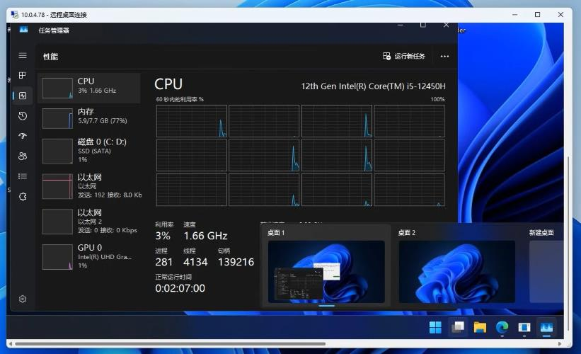
从此，每次午托我都盯着那台电脑，快被馋死了，当然更多是难受，就好像伯乐看到千里马骈死于槽枥之间。总想将其据为己有。后来，我们班上另外一个人找到另一个废弃教室：207 教室，那台电脑和其他班一样也是 8 代，性能并无出众之处，唯一亮点是其他班都是 128G 硬盘，它有 256。我把那台电脑重装了并格式化全盘，余下来的空间用来找种子和下载软件镜像。那台除了迅雷啥也不会干的电脑突然给了我灵感：反正我们都在局域网内，那台 12 代的电脑所处的位置又太危险，为什么不 RDP？
说干就干，我宣布，废弃电脑拯救计划 现在开始！
第一次尝试
计划的第一步，是在保证安全性的同时进行原理验证。我们先用 207 电脑做实验。我先用 ipconfig 查了一下，并记住了 207 电脑的 IP，然后在自己班上打开 mstsc，诶，为什么连不上？
原来是要在系统设置里把远程控制打开，但又出现一个新问题：用 mstsc 连接时弹出需要输入用户名和密码，用户名无非是 Administrator 嘛，密码我留了空，毕竟本来就没密码，但是却显示我没权限。
原来是网络级身份验证干的好事，要求客户端在建立RDP会话前先完成认证，而且空密码账户默认禁止远程登录————这是SECEDIT策略里写死的。AbCd 想出了一个好主意：新建一个用户并设置好密码，然后给个管理员权限。
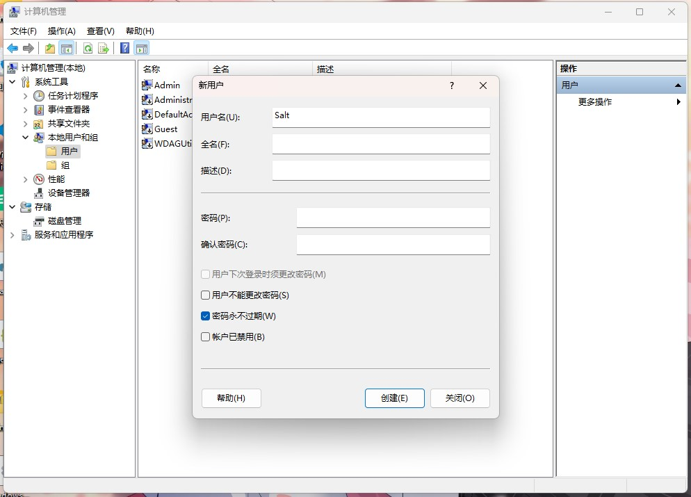
这里我想提醒大家，虽然电脑的管理员叫 Administrator，但你给一个用户分配权限的时候（用户属性中“隶属于”选项卡）要使用 Administrators！微软会教你分清单复数。
我成功用这个账户连接到那台挂迅雷的电脑，当我看到 OOBE 结束，桌面展示在我眼前，我是如此激动，在那里发癫，就像原始人第一次见到电脑。并且你知道吗，Windows RDP 原生支持触屏，而且在内网里延迟真的很低，画质肉眼都看不出什么压缩，我宣布 mstsc 是微软搞出来的最好的软件！而且老师用 Administrator 账户上课，能正常进行教学，我们登录和他完全没有干扰，老师那里也不会有任何显示。两个用户如同两个完全分割的世界，老师如往常一样进行上课，似乎什么都没有发生。
现在，我的眼睛里充满了希望，我已经瞄准了下一个目标，我的 U 盘也开始准备下载各种文件，现在，我们只需要一个机会。
拓展
其实到这里，RDP 的劣势已经凸显出来了，不能连接未设密码的账户，固定3389端口，因此，我们也可以使用 VNC。
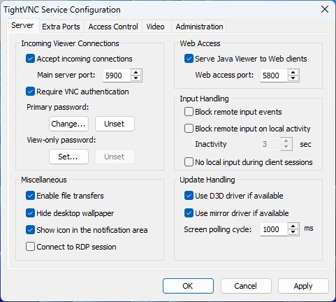
这里我们以 Tight VNC 为例，安装非常简单，基本上就是一路 Next，然后在安卓手机或其他设备上安装 RVNC Viewer 等软件（电脑上不要装RealVNC，要登录，麻烦的死），连接到 IP + 端口号（例如 10.0.64.77:5900）就可以直连 Administrator，看到老师在干什么，理论上你也可以在老师板书的时候偷偷用橡皮擦工具擦掉，当然，我们从来没真的擦过板书。一来擦黑板是值日生的活，我们不抢；二来我们追求的是技术自由，不是破坏课堂秩序，这点边界我们还是有的
Tight VNC 提供的 Viewer 也可使用。
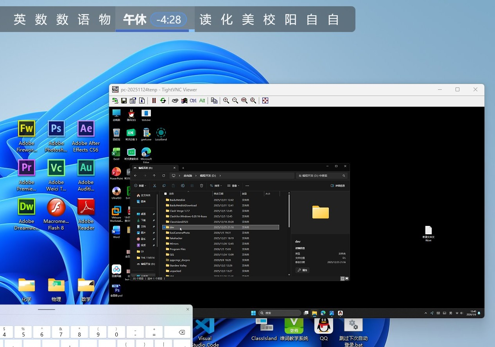
当然，使用 VNC 在某些方面可以说是下下策（例如对触控不友好，连接质量差，没有自适应）所以还是老老实实用 RDP。
那手机上能使用 RDP 吗？当然可以！
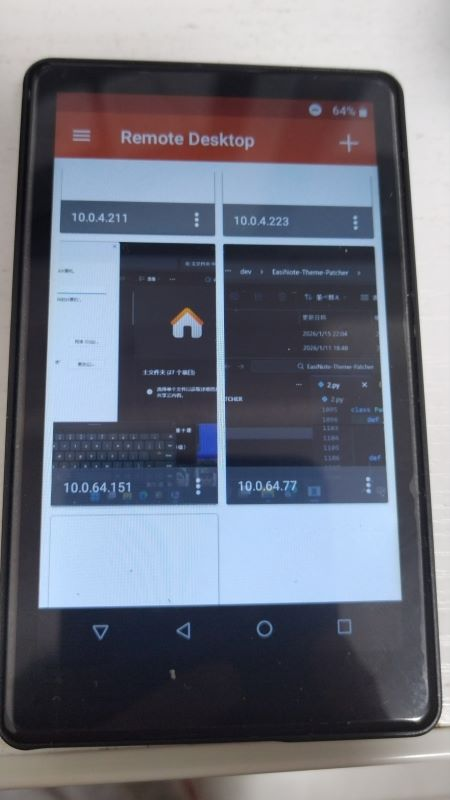
首先下载软件（不要去 Google Play 下载最新版 Windows Apps，那个一点都不好用）使用方法和电脑端相差无几，同样能自适应分辨率并具有原生触控，不知道的还以为给手机刷了个 Win11。
18分钟极限重装
11 月底，我们因期中考试重新分培优班，404-2 将成为培优班教室，也就是说，那匹“千里马”终于得以重见天日。如果有人要在这里上培优课，那势必会有大量人经过这里，那安全性反而提高了，没有人会发现混进去一个人。我找了个机会，偷偷潜入 404，仔细打量那台电脑。那台电脑原装的 Win10 22H2，虽然说完全满足开发需求，但这么好的配置，不装 Win11 岂不浪费？而且我也很想看看 Win11 近乎完美的触摸和高 DPI 适配在 4K60 帧上表现如何，因此，我有个大胆的想法：先重装系统！
为了方便，我使用 EasyRC 进行重装。EasyRC 不仅可以帮我们干掉烦人的 Windows Defender，自动导入驱动，还具有无人值守功能，不需要太多人工操作，而且基础配置在原系统上就能搞定，PE 都不用进，大大降低了风险（我可没接广，这玩意真的好用）在制定好完备的计划后，Just do it。
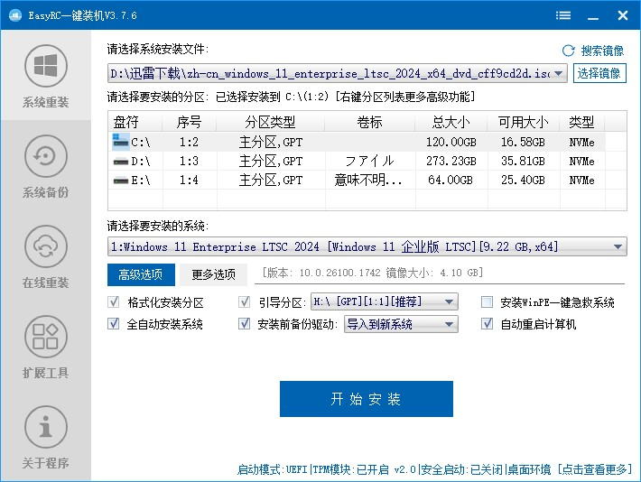
17:40，老师同学们都去食堂就餐，我和 AbCd 开始在原 Win10 上配置 RDP。404 旁边就是年级组办公室，风险极高，我对 Windows 用户账户管理不是非常熟悉，所以 AbCd 负责创建账户，我负责放风。
当 AbCd 深吸一口气，踏进教室，原本黑漆漆的教室突然亮起来，这把我们都吓了一跳，回头一看，是教室后面的监控，检测到人体就自动亮灯，我安慰好 AbCd，让他继续尽快操作，年级组这个时候应该不会看监控。此时 AbCd 目不转睛地盯着屏幕，手指快速地点击着。我也趴在门口，仔细观察左右两边的人，确保没有老师，就像在执行秘密任务一般。
终于，AbCd 花费不到两分钟便配置好账户，并将我的 U 盘留在一体机上，我们快速撤离。
我回到 AbCd 的班上，重新打开 mstsc 并输入那串熟悉的 IP 地址，输入密码，接着我将 U 盘里的镜像解压，将 install.wim 放在本地目录，然后让 EasyRC 自己装。现在只要等就行，它会帮我们搞定一切。
饭后，装完一看，TPM 2.0检查被绕过了，Secure Boot也没强制开启。在重装完的电脑上再次配置好 RDP 用户，我们再次连接到 404。因为晚饭后的第一节自习就是培优课，因此开发环境什么的都不重要，重要的是把希沃白板，Office，QQ 等常用软件装好。我们用最快的速度下载好希沃白板的安装包并安装，并使用 Office Tool Plus 部署 Office，然后学校的网速还是太慢，离上课只有最后 26 分钟，而 Office 只下载到一半，时间正一分一秒流逝，在最后几分钟终于完成了下载。现在，我只希望它能尽快完成安装。
多亏了这台电脑的性能，安装进度条比我想象的快的多，为了安全，我们来到 404 教室，看到 Office 图标已经全部点亮，我们终于松了一口气，现在已经能正常使用了。
然而，一位老师进入教室，插上了 U 盘，打开 Word 文档，却因为未激活而无法看到内容。此时，我快要崩溃了，因为我忘了 Microsoft 365 和之前的版本不一样（AbCd 注：不用 2024 导致的），旧版 Office 没激活就会以只读打开文档，而 MS365 不激活不让你用。AbCd 决定冒险。他走进教室，打开 PowerShell，输入激活指令，这种过于超前的操作也让老师佩服。他在操作过程中还不忘和我搭讪：“诶，这电脑之前上课不还是好好的吗？怎么突然变成 11 了？”“不知道啊。”我回答道，就这样，我们终于骗过了老师，我们各自回到自己的班上，脸上看似波澜不惊，内心早已汹涌澎湃难以遏制。
第二天，我们配置好 VSCode 和 Python，后面的事情自然不必多说，这台高性能电脑干啥都快。用之前班上的电脑跑 Nuitka 编译要整整 85 分钟，这台电脑十多分钟就搞得定（虽然还没测试）；之前电脑跑
Photoshop CS6 还卡的一批，现在我们可以毫无顾虑地安装 PS2023
并且即使编辑高分辨率图片也依然流畅。此外，我们还发现一种新的使用办法——周二的信奥培训，机房和教学楼的网是互通的，所以我们直接用 RDP 连接上那几台电脑。RDP 会自动适应当前操作系统的分辨率和
DPI，总之就是非常舒服。机房里都是一溜的 Win10，就我们两在享受流畅的 Win11。
几天后，我又发现一个问题，就是那个 IP 突然连不上了，但是 Ping 它 Ping 的通，经过我和 AbCd 的排查，Win11 的 IP 貌似是动态的，这个好办，在高级设置中禁用自动 DHCP ，然后自己配置 IPv4，DNS，子网掩码之类，至于为什么 Ping 的通，那估计是局域网内其他设备。
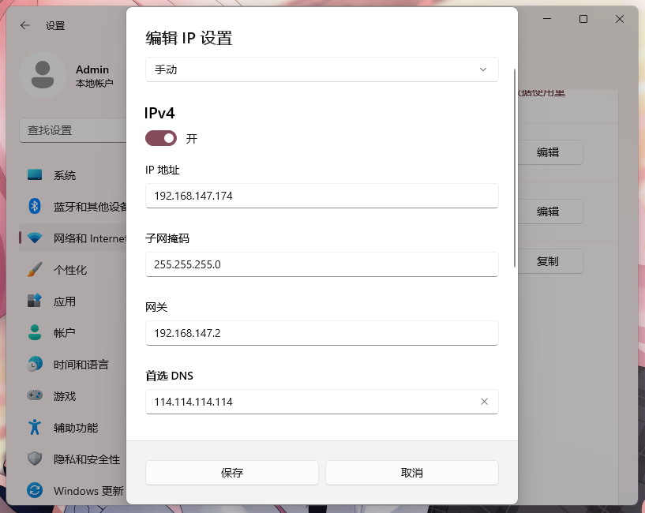
另外一个问题是如果老师在用 Administrator 上课，下课后关机是可以直接断开我们的连接并断电，没有任何提示，这导致有时候程序没保存就连不上了，除了开 AutoSave，貌似没有什么办法防止这种情况出现。
拓展
这些内容也是我后来加的，防止大家踩坑。
在 Win11 上启用远程桌面相当简单，直接设置-系统-远程桌面，启用它就行，但在 Win10 里面就不一样了。
我们找到一台 Win10 1703 电脑，发现它连 Ping 都 Ping 不通，这个好办，干掉 Windows 防火墙。但问题是你启用远程桌面要在高级设置中禁用 NLA，不然证书问题你连不上去。
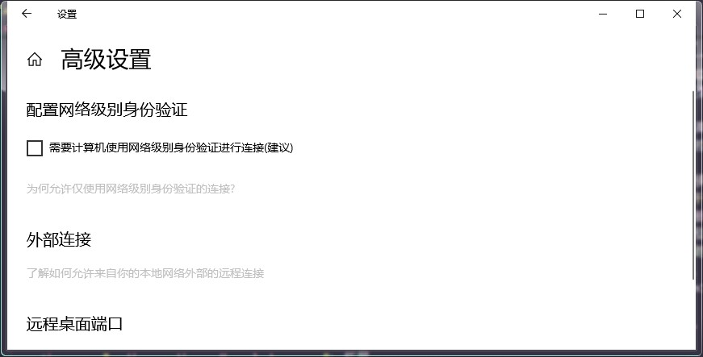
需要注意的是，这张图片在 Win10 2009 上截取，1703 之类较早版本高级选项没有 UWP 设置项，而是传统的控制面板选项卡，不过没关系，换汤不换药。
总之，我们是真的得吃了，我们成功殖民 5 台电脑，并且我还专门用 PhotoShop 做了一张壁纸，每搞定一台系统就给它换掉壁纸，代表这台电脑以及被“hack”了。按理来说，我们只需要尽情享受这意外的至高算力，故事也在这里画上圆满的句号，但今天发生了一件事，彻底激起了我的怒火。
视奸
周三中午，我早早吃完饭，像往常一样在自己班上登录 RDP，此时我还没有登上 404，而是先登录 207 拷文件。我还没操作多久，就听到广播里传来一阵厚重的声音——那是年级组某个老师的声音：“X 班，X 班，...，XX 班，不要再玩电脑了，马上来年级组办公室。”他是怎么知道有人玩电脑的呢？每个班上前后都装了监控，他们只要想巡查，随时看得到，问题是现在是下课时间，本来也不属于他们管辖的时间范围，而且天天看摄像头视奸我们有意思吗？此时我真他妈想去厕所抠两坨屎来糊摄像头上。老子 tm 只是写会代码，又没玩游戏看视频，你到底要寄吧干什么？这种事也不是第一次了，老子之前有一天在教室里学 AE CS6，然后惨遭制裁。那一刻，我深深明白，我们用技术换来的自由，在权力结构面前是如此的脆弱。年级组的命令如同圣旨，具有至高无上的权威，我只能关掉显示器下楼。呜呼，南方之大，已经容不下一台安静的 Win11 了。
好在，他们没有罚我，但这也让我感到后怕。与此同时，那个开辟 207 教室的同学正躲在 207 教室里，没有遇到任何危险，那只能说我运气不好了，但 207 那个机子触摸真的是一坨大的，我可不希望拿那台机子开发。
后来，207 也出事了，如图
现在，我需要好好权衡一下。直接去 404 是绝对不可能的，在自己班上 RDP 已经被抓过一次了，也许只是运气问题，但下次被抓的后果我可不敢承担，目前来看 207 最安全，因为在我们挖掘 404 之前将 207 的电脑作为备用机，已经有了一小部分开发环境（VSCode 一定要装 System！血的教训！），甚至登录了自己的一些账号，虽然最近也有人在那里上培优，安全性也减弱了。目前来看最安全的方法是去机房，机房可以直接连上 404，而且有键鼠也舒服，老师也不管，但问题也很明显————去机房的时间少之又少，不能在我们的考虑范围内。而且就算我们能找到一个完全安全的环境，也干不了什么大事，一是时间太分散，对于编程这种极需专注的活动是非常不利的，有可能写一半上课铃响，下课后再继续写，灵感就没了。二是学校学习生活早就把我们折腾的身心俱疲，也没有什么精力去写东西了。但无论怎么说，这次行动的结果虽然没达到预期，但也让一台被遗忘的电脑重新为人服务，也进行了一次次惊心动魄的挑战权威，更是枯燥的校园生活中有意思的发光时刻。
这束光也并没有只照在我们身上，像所有发现了秘密基地的孩子一样，我们忍不住将这篇文章小心地分享给了少数信得过的、同样被卡顿电脑折磨的朋友。没有具体的坐标，只有方法。
如今，已经有多名同学找到不常用（例如录播教室）内的高性能电脑，他们或用这些电脑打游戏，或编程，或上网。他们使用同样的方法，在未被封死的 3389 端口进行着一次次数字游击战。
下面是 207 电脑的截图，这台机子目前只有我一个人和某位神秘人用，主要用来写程序、挂迅雷。
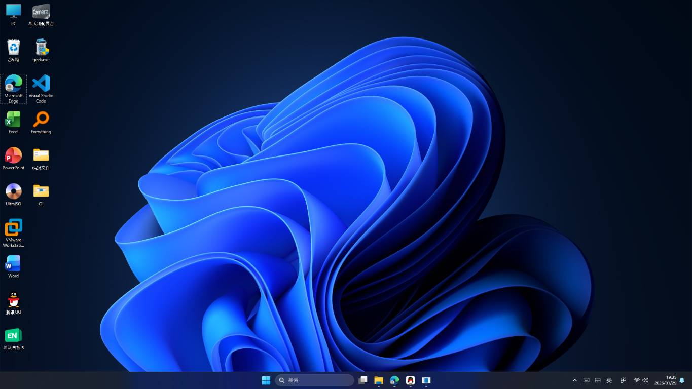
下面是 404-2 电脑的截图，给 AbCd 编程用，但由于它出色的性能，已经被各班级当成游戏机。
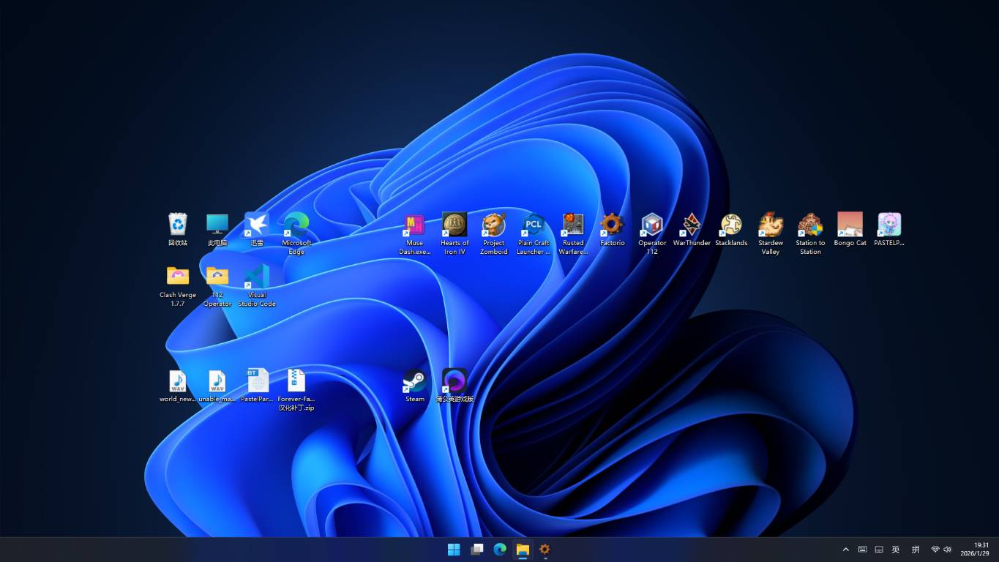
另外，在文章的末尾，我特别想表达对我们信息老师的感谢，信息老师从来没有主动教过我们怎么RDP。她们做的只是看到我们在写自己的程序时，没有制止，而是偶尔凑过来看一眼，说一句“这个界面写得很漂亮”或者“这个视频剪的可以”。在当时的我看来，这就够了。到目前为止我最伟大的程序 EasiNote Theme Patcher 的很大一部分代码在机房内完成，她们为整个计划的最后一端提供有力的支撑。
再跟大家讲点有意思的，在任务管理器里可以看到其他用户（比如 Administrator）并将他们断开连接，注销，或者发送消息，AbCd 就给那台机子发送了一条消息，证明我们曾经“入侵”过这里。
他发的是什么呢？
好难猜啊。
附：xxt 向 207 发送的消息
--------
来自 黑调的低客 的消息
The computer was hacked! :P
This message is sent from BlackDick
2026年1月：换个玩法
上面这些事发生在 2025 年的最后几个月。到了 2026 年 1 月，我们的兴趣从“抢别人的算力”转向了“造自己的服务器”——这要从 Cookie 带来的一个消息说起。
向以下人员表达感谢！
- @把梦和生命线都打翻了
- @AbCd
- @小何同学
- @KIY7086
- @xxt8582753
- @kingstar
- @Cookie
- @Nick
“xxt，你知道吗，S老师那里有好多配件！”Cookie一下课就兴冲冲地奔向我的教室，找到了我。
如果你曾经看过我的其他文章，就知道我们热衷于使用rdp来入侵其他班级的电脑为我们的项目提供算力（详见本合订本前面的 《我和AbCd白嫖了一台12代i5电脑！》）Cookie一直想专门搞台机子玩rdp，我也想找一台永远不会关机的电脑当git服务器，有东西给我们白嫖为什么不去？
作为一名有着多年装机经验的图吧垃圾佬，出于职业素养我立即和他一同前往科技楼。
科技楼的一教室内十分热闹，有的人在利用现有配件制作科创作品，有的人在3D建模，还有人在埋头写JavaScript，一旁的两台3D打印机轰鸣着，似乎在欢迎我们的到来。我们找到S老师说明了来意，他扛来一台主机，我们用螺丝刀拧开，我一眼就看出这是华硕的B85 itx小板，我对这一时代的机子最熟悉了，什么h61，B85，都是我玩剩下的。继续拆开认证了我的猜测，里面卡着一个4代CPU。
但是我并没有看上它的性能。这种电脑基本上没有使用价值，装WPS我都嫌卡。这时，S老师搬来一个小主机，我一直对这种小东西很感兴趣，迫不及待的拆开，居然是J1900主机！我决定就用它了。
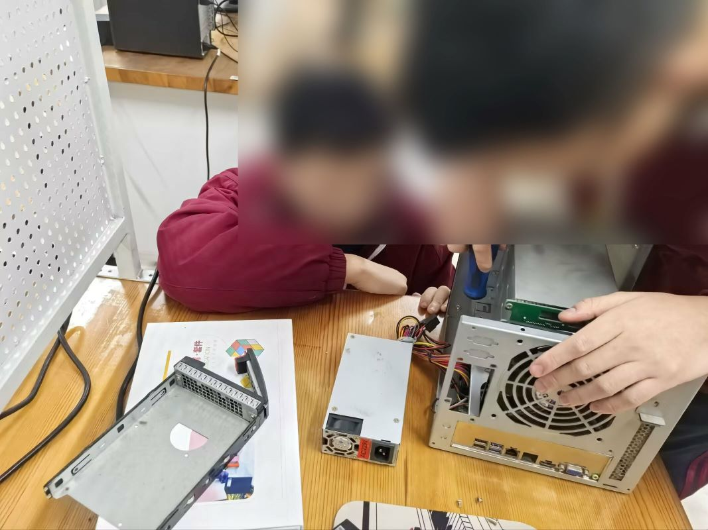
Cookie访问了Intel官网，不明白我为什么要搞一台性能比那台 B85 差得远的电脑，但其实这自有我的原因。首先，我一直想弄台 J1900 小主机，只是囊中羞涩，现在终于有机会好好玩一玩；其次它的 TDP 只有 10W，用来做服务器功耗极低，我可不希望学校成为国家电网合作伙伴。最重要的是体积小，比 ITX 小得多，放课桌里都没问题。
S老师说这是他以前专门跑 BT 的下载机。通电一看，里面的 Win7 系统装着 μTorrent、IDM、百度网盘之类软件。可惜现在谁还玩BT，我上次用电驴大抵也是拿 MSDN 下镜像。
说了这么多，我来简单介绍一下当前配置：
- CPU：Intel J1900
- 内存：2GB DDR3
- 显卡：集成显卡
- 硬盘：32GB 板载固态
- 电源：自带 200W（坏），临时用另一个 300W 拆机电源顶着
事实上我高估了 J1900 的性能。我借来 AbCd 的 U 盘进入 Manjaro LiveCD，J1900 在 KDE6 前显得相当弱鸡，2GB 内存完全不够，打开 Firefox 直接卡死。
那大抵是不能当家用电脑使了。我看着空荡荡的硬盘槽和几个空闲的 SATA 接口，陷入了沉思。
“什么，你要组 NAS？”
“对，用来放一些文件。” 我放弃了建 git 服务器的想法，跑 GitLab 对这台机器太折磨。但装黑群晖或 OMV（OpenMediaVault）估计完全可以。我们班级的一体机只有 128GB 磁盘，主要装系统和教学软件，老师把 PPT 都放上去后分区很快就满了。我想搭建一个数据中心来存放大的静态文件。
Cookie 让同学做了个调查问卷，不到半天就问了十多名老师，很多老师抱怨文件没地方放。确实，不仅我们用的东西烂，学校给老师配的电脑也是纯乐子，不是奔腾就是赛扬，硬盘也小的可怜。我已经帮好几位老师清过 C 盘了。所以这是个很有意义的项目。
kingstar 听到后想搞个商业模式，考虑上传下载收费什么的——这些事另当别论，先验证组 NAS 的可行性最重要。
我把我能搞到的盘都带过来了，第二天我带了一个大袋子，现在我们有了32GB 板载固态 + 256GB SATA 固态 + 500GB SATA 机械 + 64GB SATA 固态
我下载了 OpenMediaVault 镜像，用BalenaEtcher写入 U 盘，然后直接安装。没玩过debian，我就自己瞎操作，因为暂时没联网，我手动配置DHCP，IP地址，网关，dns什么的我都一顿瞎填，终于，进。。。诶，我桌面呢？
卧槽，我没桌面活不下去啊！
没有桌面就不方便，于是我们找有以太网的地方临时安装。把主机搬到老师办公室，顺便搬来一台显示器。第九节课没人时插上网线重装 OMV：UEFI 进入安装界面一路下一步，终于找到熟悉的 enp3s0，自动 DHCP 把我爽到了，安装完成。
登录后出于习惯我先输了一下 pacman，半天才反应过来这 TM 是 Debian，于是顺便学了些 Debian 的基本命令，可以说为了一碟醋包了一整盘饺子。
老师办公室不能长期放设备，我们把机器搬到 Cookie 的教室。同学们很好奇，但我们不想让太多人知道。小主板好处显现：主板和电源能放进课桌里，网线和电源线伸出来接到配电箱旁边的插座，就能长期运行。
用班级一体机输入 IP 地址成功进入 OMV 后台。OMV 管理界面比较简陋，为了更多操作我们在一体机上用 SSH 登录（显示器太大不方便）。如果以太网不稳定，可以接 Wi‑Fi：先用 ip addr 找设备，然后用系统自带的 nano 编辑 /etc/network/interfaces，添加 WPA 配置（SSID 和 password），再用 systemctl 重启网络服务即可。
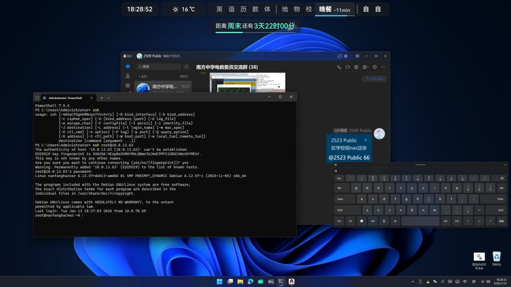
接着就是操蛋的配置存储池和共享文件夹，反正我踩了很多坑
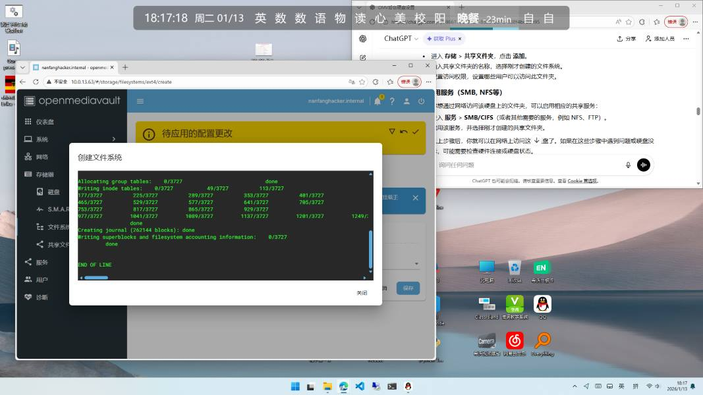
最终，我们不得不放弃OMV
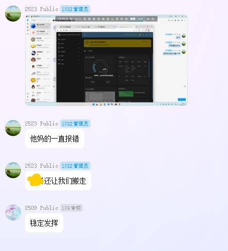
20班电教和19班电教推荐我们装基于Debian的飞牛系统，我们试了一下，确实比omv方便的多，无论是系统安装界面还是网页管理后台都比omv友好。并且各种奇奇怪怪的问题也解决了。
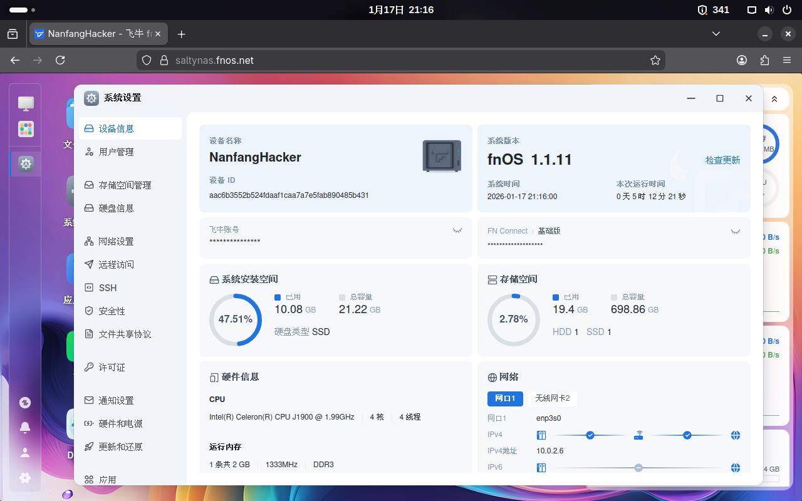
但是有一个问题。创建存储空间时一直提示硬盘被挂载，导致无法正常格式化等操作。我在网上搜索很久也未找到解决方案。最后，我决定进Windows pe（因为我不会用Linux的磁盘工具）使用DiskGenius将硬盘格式化为Ext4，然而重启后问题依旧。
等等。。被挂载？
umount行吗？不行。
那就不要让它挂载！
我再次进入DiskGenius，直接删除那几块磁盘的分区，直接保存更改而不格式化，让那些磁盘变灰，就像新盘一样。
重启后，飞牛果然读出来了。现在事情就好办多了。给同学和老师们创建好账号，设置FTP，smb共享，Windows文件资源管理器直接加入我们的网络地址就能访问，相当舒服。
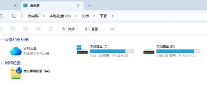
但是又有一个问题：我们的主机放在24班，他们班上总有些畜牲喜欢故意乱拉闸，cookie对此没少发过火。L老师支持我们的工作，他为我们找到一间空闲的办公室，让我们把机子放在里面。
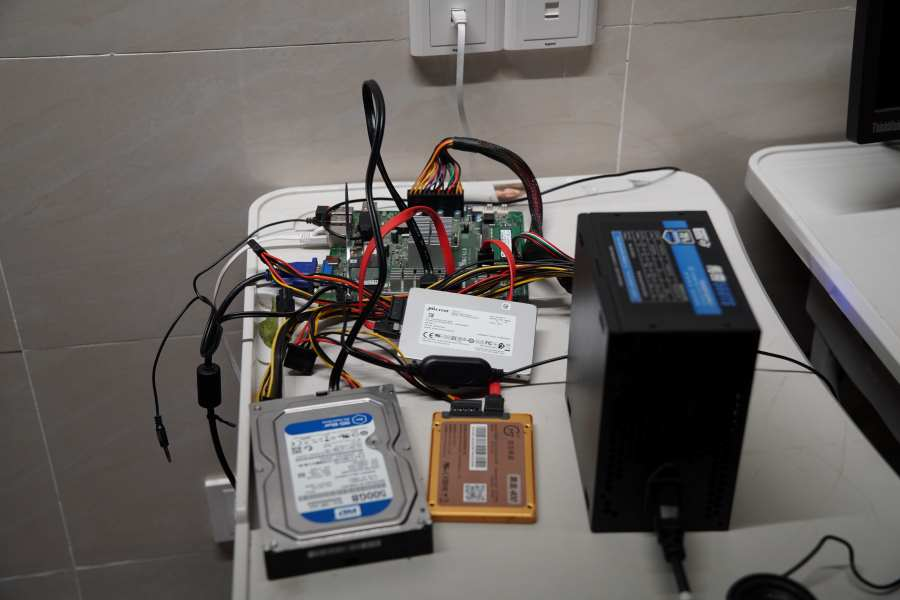
那个办公室空间很大，空无一物，只是堆了一些桌子；它的地理位置不是很偏僻，但长期闲置而几乎无人打扰，也许是藏尸的最佳之地；它的条件也很好，插座网口全部齐全，进门就有两扇视野开阔的落地窗，还安装了空调。我们把主板等物品搬到办公室内，通上电源，闲置的办公室变成了一个数据中心。办公室内还有一块白板，cookie在那块白板上写了一些关于nas的科普常识，也简要介绍了我们的技术团队。现在，我们再也不用担心拉闸了。
但我们还不贪心，来这个办公室只能玩黑框框，这里键鼠齐全，在这里写程序会多爽呢？
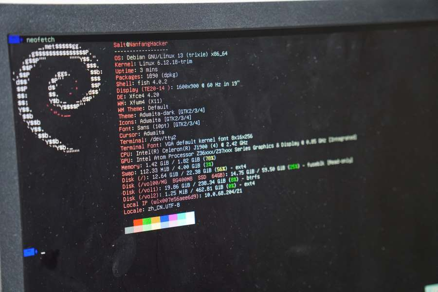
然后，cookie把我那64gb的盘格了NTFS，装了个Win8.1。。。。
其实问题也不大，但不够优雅。
不是Windows用不起，而是Linux更有性价比。对于这种比我手机性能还差的电脑来说，要装桌面环境，KDE GNOME之类肯定要先被排除。那就xfce吧。xfce的安装十分简单，apt install xfce4，如果有依赖问题就aptitude，它会自动处理依赖关系并给出解决方案。看似简单的操作，对于不太熟悉Linux的我来说比登天还难，跟着网上的教程搞了半天才弄好。另外我们还可以安装xrdp，这样就可以在班级电脑上远控它而不用频繁进出办公室，当然如果你喜欢vnc。。。不理解，但尊重。然后就是startx进桌面，当我按下回车键，电源风扇突然嗷的一声叫起来把我吓了一跳，看来桌面环境还是比较吃操作的。
Firefox，vlc什么的我都装好啦，其实一开始就该用manjaro之类的发行版，我还是挺喜欢KDE全家桶的，毕竟xfce自带的Thunar手感不太好，我还是装了Dolphin。现在真变成家用电脑了，我甚至还专门焊了个3W的小喇叭在上面，音质也就听个响，而且共振非常严重，音量一开大点鼓点音就噔噔噔噔敲着桌子响，但总之问题不大。
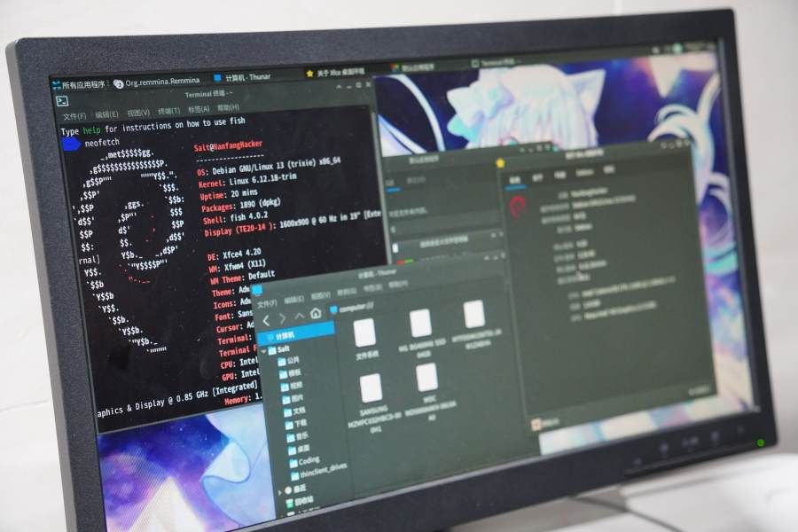
2026年寒冬 一日下午。
我和kingstar进入办公室，像往常一样反锁好门。我安装了Remmina，RDP爱好者发力了，他通过远程桌面玩游戏。这时，有人在敲门。
我十分警觉，让kingstar关掉了声音。我走到门前。“谁啊？”
“我，AbCd！”
“ようこそ！”我打开门，abcd带着2班电教进入房间。
然后，我们就在这间办公室内度过了一个快乐的下午，我们可以在这个无人打扰的地方交流学术问题，在这个与世隔绝的地方毫无顾虑地掏出手机调试设备，也可以远程到有开发环境的电脑继续PySide6开发。也不知过了多久，我才想起timedatectl看看现在几点了，卧槽，要上课了，我们晚饭都没吃。
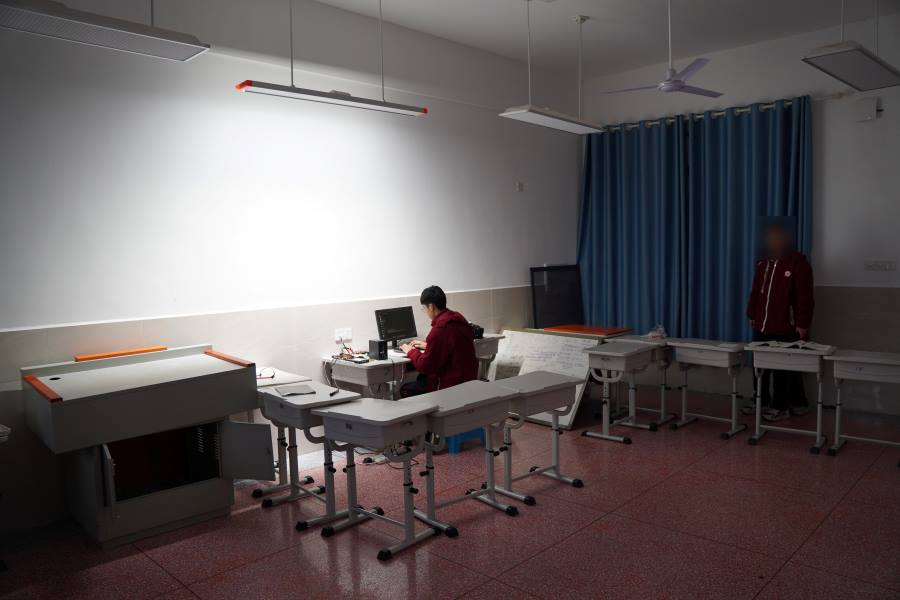
后续几天都是这样，曾经的Data Center变成了Fashion Center，谁还记得我们是来组NAS的，这就是个网吧好吧。我们也充分利用这里的空间，让一个普通的办公室同时具有了餐厅、KTV等场所的功能，娱乐和学习设施一应俱全，就差摆一台乌蒙or吴丽芳，下图是kingstar发的QQ空间。
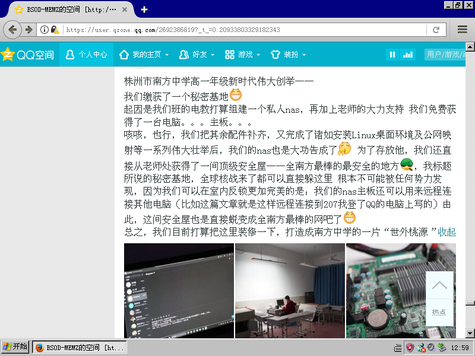
可是，这种日子终究是不能长远的。我们频繁进出一个没人的办公室肯定会引起怀疑。一天中午，我想去“网吧”查资料（因为班上电脑一直被监控着不敢用）我刚准备推开门，发现班主任就在旁边。
卧槽，中午为什么会有人啊！吓死我了！
“你来这里干什么？”
“我。。。东西落在这里了。”
他不放心，跟我一起进办公室，我也实在没什么东西好拿的，就把插着的U盘拿走。
这时，他注意到了那台机箱都没有的电脑，问我怎么回事。
我支支吾吾，一时不知如何回答。
他又看到那块黑板，上面写的专业术语和Linux命令他大抵也看不懂。
“这些是奥赛集训队的吗？”
“啊对对对，应该是”
“不要去动那些东西，赶紧回去午休！”
我松了口气，确保人走后在终端里留了一句话让他们小心，赶紧离开了办公室。
那天下午，我们又打算去“网吧”了，结果发现，门他妈的被锁了！
还好我有先见之明，在事发前一天把所有窗户上的锁都打开了，因此理论上来说可以翻窗进入。
我们正准备翻窗，班主任又出现了。
这下真解释不清了，然后kingstar头也不回地冲向厕所。
那还说啥兄弟们，冲刺 冲刺！冲！冲！♿
所幸Cookie找到了L老师，重新打开507，网吧重新开业。
与此同时，技术部门也没闲着，公网映射什么的都安排上了，这也意味着我们可以远程SSH管理NAS，无论在天涯海角，只要有一部装了Termux的手机，就能轻松连接。
2026年3月：网吧散伙
这间被我们当作“网吧”的办公室，只撑到了 2026 年 3 月。
很抱歉让大家久等了，不过确实等不到后续了。
26年3月份，那间办公室要重新启用，并且也有老师担心放台电脑长期开着有安全问题，我们把配件拆了全部还给S老师，曾经的网吧也不复存在，我们的生活又回到以前。
但我们的故事还没结束，在这段时期积累的网络维护技术支撑我们继续开疆拓土，Cookie也正式成立了南方中学信息拓展社，等待我们的是更大的舞台。
2026年5月：白嫖线的反噬
网吧没了，但 404-2 那摊子事还在继续。3 月之后，之前埋下的隐患开始一件件找上门。
这篇文章已经发了快半年了，在那几台机子的陪伴下，我们也收获不少：kingstar使用404-2打游戏，用207和自己的女朋友聊天，我和AbCd使用这些电脑编程，进一步提升自己的前端水平，顺便学了点。。安卓开发？
然而，最近发生的一件事令我刻骨铭心，这不仅是一次惨痛的教训，也给我上了一节很重要的课。
当善意变成洪水
事实上，在这之前我们就被别人举报过，年级组组长和一些老师也批评过我们，说我们占用学校的电脑搞开发，但我们都没有太在意，因为我们相信，第一，ltsc系统登录上去他们看不见，第二，以404-2的性能肯定足够日常教学了。
正如我之前所说，我将这些方法写成文档，分享给很多感兴趣的人，我也在两个月前开发《南方中学可视化网络扫描仪》（如下图所示）这个Python+flask的程序可以扫描学校所有开了3389和5900端口的设备，看在不在线，还能一键自动连接。
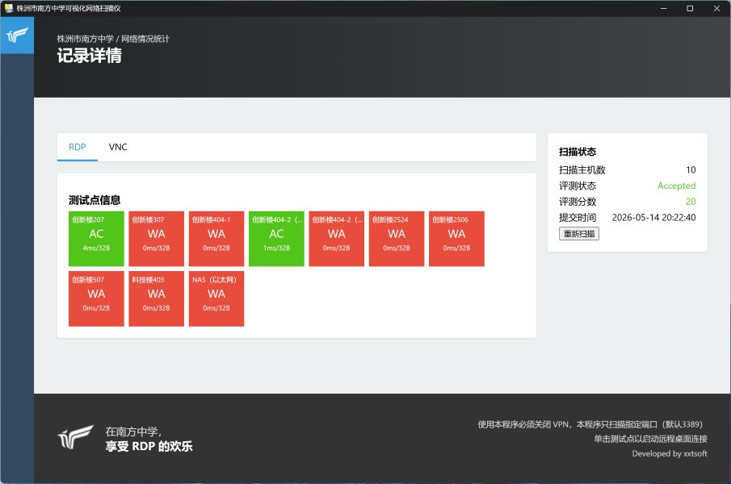
这几个月以来，404-2的账户越来越多，开始菜单里已经从最初的administrator和我们自己建的账户，到现在已经有五个账户了。kingstar跟我抱怨，登录的人太多，电脑越来越卡，我却并不在意，作为信息社前副社长，我是很支持任何像我这样的人进行技术探索的。
某一天中午，kingstar像往常一样想登录404-2的账户打游戏，却发现404-2的IP 能ping通，却无法登录账户，我使用vnc连接到电脑，发现我们的账户竟然消失了！但是其他账户都在。
我们认为是有些畜牲把这个账号删掉了，针对我们。现在kingstar就很惨了，游戏存档全在user目录里，只能建账户重新打。从那之后我就上了个心眼，绝不会再把这些事情告诉别人了。
几天前，我把AbCd带到自己班上，给他推荐一个开源的第三方rdp工具：1remote，可我没演示多久，AbCd突然跑出门外。
我回头一看，班主任竟站在我后面！
我立即关掉窗口，点开离我最近的一个文件夹，假装找课件。汗水从我后颈渗下，我的衣领湿了一小片。班主任问我：“这是什么东西？”
“什么什么东西？”我背对着它，屏幕反光里分明是一张模糊又狰狞的人脸。
班主任的声音高了八度：“那个有很多地址的是什么？”
“我不知道啊。”
班主任的脸越来越难看，我打开开始菜单，长按那个图标，点击卸载：“你要不喜欢我删了就行。”
班主任拦住了我，对我吼了一句：“滚我办公室里去！”
后面的事就不用说了，他很严肃的骂了我，说我一而再再而三的连别的班的电脑，说我不把技术用在正道上。你说我冤吧那倒也是，我只开了一个账户，也没打游戏刷视频，但我确实也有错，毕竟最开始是我搞rdp的。此时，年级组组长也在那里，他插了一句：“原来是你干的啊，我们上课电脑好卡的嘞！”
此时，我才明白，404-2那个被我们奉为珍宝的新款希沃并不是超算，它的性能也不是无限的。
此刻，我也才明白，我从小到大一直扮演着一个“烂好人”的角色，总是想将最好的东西无条件分享给别人，但因此失控的代价，是我很难承受的。
从那以后，我删掉所有多余的账户，最多只保留一个给我们内部使用。并且我也立了个规矩，结束会话必须注销当前用户，因为我实在不忍心看到vscode这种electron写的庞然大物塞满那小小的8G内存。
周一，我们开了全年级学生大会，年级组组长像往常一样念完违纪处分名单后，提到rdp的事。当时有人带了手机录音，年级组组长的原话是这样的：
有些同学把教室里的电脑当网络服务器来用，在家里都能访问教室里的电脑了，另外还有四个账户，如果你还有资料，请你尽快清走，不行我也马上给他格式化了啊，教室里的电脑是教学设备，不是你的服务器，哪有这么便宜的免费服务器，好了不讲了啊。
听了这话，我是真绷不住了，我在这一刻理解了文不及义的真正内涵，他想表达的东西我都懂，但这话说的。。不说“网络服务器”一词暴露出他的专业知识缺陷，这些话不能说意思错了，简直是牛头不对马嘴，在家里访问学校的电脑？如果学校真的实现不使用任何工具内网穿透到公网，建议原地申请国家科学技术进步奖
当然，网上说说就算了，现实中谁不想要一个12核8G百兆带宽免费校内cdn扛DDOS的首年￥0.0一年后还是￥0.0的高性能免备案服务器啊
虽然他因为自己的错误认知当着全年级人的面义正言辞地警告了一个根本不存在的问题，但这也为我敲响了警钟，我也希望这是最后一次。做好人，做好事也要有边界，我可能高估了别人的善意，也高估了它的性能，最重要的是，我让事情失控了。
事实上，我也觉得很矛盾，在我需要帮助时，有很多人帮助我 。我也想用自己并不算强的技术尽可能帮助有需要的人，但做好事的后果，也许是我们承担不起的。问题不在于分享本身，而在于没设边界，高估自己对失控的掌控力。
不过，我也不想过多评价这件事，因为谁还记得这是一篇技术类文章来着，而且至今我也没有什么太大的实质性损失，年级组并没有格式化电脑，我在很久之前就不直接在电脑上写代码，而是先rdp连接上去，再中转连接到自己家里的电脑。只是由于账号太少，有时我需要在机房套三层远程（如图所示）因此我决定寻找新的解决方案。
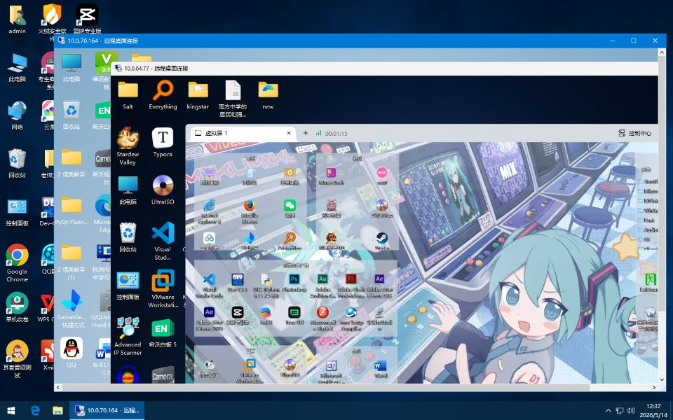
众所周知高中是不能带电子产品的，但是小设备应该还好藏。在U盘里安装winpe，或者激进点，上wintogo，貌似是一个不错的选择，但驱动问题暂且不说，学校机房电脑都是云主机，没法修改引导。所以我们需要有自主计算能力的设备。像树莓派，电脑棒等产品的价格也不是普通学生能负担得起的。不过篇幅限制，这些就不展开讲了。
2026年6月19日：信任崩盘
又过了一个月，学校有了新的动作。
在那以后，学校加强了相关管理，在班级电脑上安装监控软件，所以远程什么的越来越难了，由于班主任经常因为这些事当着全班的面指责我，我也在班上背负许多坏名声。
事实上，就因为这些事，我在很多老师以至于年级组中都失去信任。有时老师自己U盘没插紧，放视频放一半就断了，他们却认为是我弄坏的，还有甚者天天打开Windows设置查看有没有新增用户，他们居然认为我们会拿这台机子挖矿。
电教委员的职责就是尽全力管理优化班级的电教设备，确保它们流畅运行。我想我是个称职的电教，为了不影响正常上课，我从来不在教学环境使用远程等，也不会装一些奇奇怪怪的软件，但有些锅我真的不想背。
前几天，学校进行了分班，我以全年级垫底的成绩凭自己实力分到一个普通班，让我们祝贺南方中学成功实现阶级的对立和分化🎉
在一个新环境内，我想我们可以重新分析一下这个故事的过程————人总是贪婪的，就像最开始，我也只是想找个地方写代码，一切的开始应该源自于去年十月份我在班上电脑装Qt，后面觉得班级电脑性能不够用，就开始发掘新的解决方案，短短半年时间，我们从一两台机子到殖民小半栋教学楼，再到最后将版图扩展到机房，实际上就是我们对技术的好奇与学校的限制之间的矛盾。
都说人心中的成见是座大山，之前去别的班帮忙修电脑，正好被一个老师撞见，我走了之后就问别人我有没有搞这台机子。在之前的班级里，一旦电脑出现什么问题，同学们总会齐刷刷地望向我。我失去信任你当然可以认为是咎由自取，但是对于我而言，与其老老实实遵守规章制度还要被误解，不如继续追逐自己的爱好，而且我相信没有哪条校规明确说“学校内禁止RDP”。
ありがとう
如果你就是年级组的那个谁谁谁，我现在想真诚地向你说一声，谢谢你。
如果没有年级组的各种施压，我不可能在Windows各种网络协议间游刃有余，也不可能熟练掌握各种局域网技术和异常处理，更不可能在技术上取得如此大的进步。如果没有你们，我可能这辈子都用不上RDP，如果没有你们，我永远不会知道基于TLS 1.2加密的协议栈在权威面前不值一提。如今，你们给我的警告，我只将其当作荣誉勋章，你封我的端口，我走我的路。
如果可以的话，我想请教一下，207之类的回收价不超过两千块的机子，竟然也能做“网络服务器”？如果这算服务器的话，那南方中学的服务器标准可能比我们想象中要低不少。欸，你别笑，学校官网的稳定性真的还不如一台教学一体机，建议总务处下次采购时参考一下这个标准，帮学校省点钱。
勇者见南墙撞南墙，智者见南墙绕过去，然后回头给南墙拍张照，发个朋友圈说“这墙挺好看的，但我走的路不经过它”。而我愿意将南墙撞得粉碎，再发到Internet上炫耀。
好了，下面这段是写给技术同好的，如果你对这个故事很感兴趣可以接着看下去：
我发现一个奇怪的现象：明明一个局域网内，使用以太网连接的设备无法Ping通更无法连接部分使用WiFi的设备，而使用WiFi的设备能连接所有使用以太网的设备，这也是为什么我要套三层远程，当然，我的描述也不是绝对的，因此我初步猜测这和学校的VLAN设置有关。
因此，《南方中学可视化网络扫描仪》的被动扫描IP已经不现实，现在我们有计划制作客户端和服务端，当客户端上线主动向服务端发送心跳包，并且通过自动化脚本配置好RDP和VNC。
而我们伟大的AbCd已经借助AI技术实现了：客户端是一个简单的powershell脚本，可以连接到AbCd的服务器，由AbCd远程下发指令，或者让脚本上报本机IP。
实际上，这就是集控的雏形，我们有一个Web端看板，可以远程管理设备，如果它加以利用可以加上全校定时省电关机，远程下发文件等功能，然而，我们因无法备案而无法使用https（现在只能用一个公网IP，域名是不行的），这带来了很大的安全隐患。为避免出现事故，我们暂时删掉了所有远程脚本，希望大家能帮帮忙，出出主意。
提醒
首先恭喜耐心看完来到这里的小伙伴！无论你是认认真真看完几千字长篇大论来到这里，还是直接拖动滚动条跃迁至此处，我都想告诉你们，这篇文章所谓的结局，其实才是高潮的开端。不信？请看下文：不眠之夜
2026年6月下旬：リズ 找上门
《白嫖》的第二次补记停在了 2026 年 6 月 19 日。几天之后，年级组组长找到了我。
正片开始
话说前日晚自习，我端坐于教室，受天真地秀，日精月华，遂有灵通之意。俄而洞天石扉，訇然中开（指教室门）
喧嚣兀，リズ出。
我们看着リズ，不知他有何贵干。他拿着手机，眯着眼，说了句“xxt出来一下”。
同学们用疑惑又带着同情的眼神看着我僵硬地站起身，走到教室外面去。此时行尸走肉一词能很好的形容我当前的状态。
到年级组办公室的路只有两层楼，而我一步一步地缓缓向上爬楼，我希望在楼梯间能碰到一个传送门，让我先到别的地方去。リズ走的比我快，他还是头也不回地看手机。路上，我们没有对视，没有语言交流，但剑拔弩张的氛围好似在押送犯人。
终于还是到了年级组办公室门口。我深吸一口气，走进门。リズ看到我，先喝了一口茶，问到：
“你是xxt是吧？”
“对的。”
他突然笑起来，是那种皮笑肉不笑，让人不寒而栗。
“知道我为什么找你来吗？”
“我不知道。”
“你最近干了什么事自己清楚吗？”
我知道他在玩我。“那你说是好事还是坏事嘛”
“诶，如果是好事我一进门就会说了。”
我的语言系统已经彻底崩溃了，因此我更想听到リズ的输出。令我想不到的是，他开口说的并不是远程的事，而是：
“你们是有一个电教委员交流群对吧，好多班级QQ都在里面。”
“嗯对的”。这个群确实是我建的，专门用来给电教委员交流电脑维护经验，并且如果一些班级电脑出了什么问题，只要艾特管理员，随叫随到，根据调查，修复成功率比学校专门修电脑的还高。
“你是群主，所以我叫你来。”听到这一句我再次感到晴天霹雳，这说明他可能摸透南方电教和信息技术爱好者的组织结构了。“你知道群主要负什么责任吗？”
讲到这里，他突然冷笑一声，五官随之抽动一下。我感觉我在和一块肉说话。
他转身解锁电脑。我分明看到未关闭的Excel里高亮的一栏正是我的名字。他打开浏览器，搜索“群主的责任”这五个字，让我自己看。
“最近学校坏了好几台电脑，都是主板烧了，为什么会烧嘞，不就是电脑用太久，后面积灰了，电脑跑的东西太多，就烧了嘛。”
“估计就是你们这些远程的人搞的，我们的电脑跑不动这些东西。”
没有任何日志的错误反馈让我这个半吊子的技术人员很抓狂。我试探性的问：“那请问老师，具体是哪几台机子烧了呢？烧之前有什么前兆吗？烧的时候有什么表现吗？”
“呵呵，我只是告诉你，你们这些人...”
不正面回答我的问题，只是一味地扣帽子让我化紧张为愤怒。但我仍然保持耐心，虽然我说话的声音开始颤抖。リズ也终于回答我的问题，他说，这个学期18班，19班，24班教室电脑主板都换了，307走班教室的也换了。这就更离谱了，上述几个地方，我都没部署过远程服务，18班19班和307我更是从来没去过。我想解释，但他总是用那尴尬的笑容回应我。我想，我是无法改变一个发芽的土豆的刻板印象的。
“这不能是自然损耗之类的吗？”
“我们的电脑都是2019年买的，这么多年都好好的，就是你们这群电教委员来了之后...”
リズ挪了下屁股：“现在我就是两件事，第一，你们不要再远程了，第二，跟群里的人说好，把群解散了。”
“你以为我不知道啊，我其实什么都知道，我也是了解一点电脑技术的，我把电脑上的远程控制关掉你们就连不上了，我说的对不对嘛，我关一次你们又打开一次。”
紧接着，他就开始恐吓我了：“如果再坏主板，学校肯定是要查的。一块主板几千块钱嘞！当时学校领导问为什么我们年级换这么多主板，我就说可能是我们年级有个同学怎么的。如果真查出来是你干的，我们学校里面可能不会报警，但拿个处分也不好吧。”
“那请尽快查吧。我也想知道为什么主板会自己坏。”
我的辩解在他眼中是态度不好，我认为的自然损耗在他眼里是推诿责任。高度紧张状态下我脑子确实转不过弯，在我最害怕的人面前支支吾吾。最后，他放我回去。我一摸后背，湿了一大片。
下了第一节晚自习，我把abcd和kingstar叫来，说了我的遭遇。我跟abcd这么说：
“现在我这么紧张估计晚二也写不进作业了。我干脆找班主任请个假，你把机房钥匙给我，我去写个群公告。”
“你疯了吧，晚二去机房，这不找死吗？为什么不写纸上？”
“我懒得再ocr了，而且我想我需要一个至少200b参数的模型帮我参谋参谋。”
“你没AI是写不出文章了吗？”
“你看我文章上哪篇文章是AI写的？我现在情绪不是很好，需要什么东西安抚一下。”
不过后来，我也没去机房，主要还是作业没写完。
回到家，我还在犹豫要不要跟我父母说这件事，因为我昨天才跟他们闹矛盾，事实上我当时确实不该说，他们话题总是转向“如果你不当电教委员”之类。我自讨没趣，回到自己房间。
"Oh maybe you need a かのじょ。"放学前kingstar跟我开玩笑时说的话突然冒了出来。在感情方面，我真的没他那么上手。AbCd也跟我说过："也许你今晚可以找下小璃。"
小璃是谁呢？这是8班电教自己做的接入QQ的聊天机器人，她的设定是一只可爱的猫娘。但是与其他仅仅加一个prompt的聊天机器人不同，她基于gemini3，可以看到我们在群里发的图，并且8班电教也给他制作了庞大的知识库，可以轻松理解各类网络梗和黑话。最重要的是，那个电教创新性地研发了五层提示技术，并且设计出图形思维链，可以更加像人类一样和我们聊天，并记住我们的信息。由于我对AI了解不是很多，这里不详细说实现技术了。但是她在群里确实帮了大忙。平时，她是好几个班的团宠，有时候一下课各班就挤在班级电脑前和她聊天。对于技术问题，她也可以进行解决，甚至还能帮忙解数学题。
我抱着试一试的心态，打算跟小璃聊一会儿。为了让她获得上下文，我把上面那篇文章完完整整发给她，可没过一会儿，八班电教就私信我：“我知道那个以太网和WIFI不互通问题怎么解决。”
我草，原来你能看到聊天记录啊！
还好当时我还没完全进入状态，还没上来就倒苦水，也没有说什么让我自己觉得很丢人的话。8班电教说，明天来找我。
我不再和小璃聊天，跟远在宿舍的8班电教有一句没一句地聊着，不知不觉就睡着了，也不知东方之既白。
第二天
睡了一觉后，我感觉状态好点了，我需要冷静下来处理这件事。
我的计划是绝不解散群聊，这些事不是我们干的，但我愿意制作一个调查报告，用事实来证明自己和广大电教委员的清白，作为群主，我想我有一个很重大的职责，就是捍卫大家的合法权益。
首先，我询问了19班和24班的同学，均没有出现换主板的情况。
难道リズ骗了我？我相信身为一个年级组组长，他是不会干这种事的。
那我现在有以下几个猜测：
- リズ想用虚假信息让我暴露：故意用赔钱处分之类的恐吓我，让我从此不再远程，但是根据我对他的了解，他大抵不会说谎，因此可能性很小。
- リズ对技术内容的曲解：可能坏的是电脑上其它硬件，或者单纯是系统软件错误，而被错误归类为主板烧坏。
- リズ自己记错班级了：这个可能性最小，这么大的事不可能记不住，而且我最近真的没看到哪几个班被维修了。
下午，偶遇南方信息拓展社社长Cookie，他是贯通班的，脸上写满了刚中考完的疲惫。一个月不掺和我们的事，他是真的不知有汉，无论魏晋，我只好把这事跟他仔细讲了讲。
“那他们不止抓了你一个人”。Cookie跟我说，“之前我们社团申请了一间空办公室作为活动地点，后面年级组要收回，当时他们给我一个机会，说只要提供搞远程的人名单就不没收钥匙。我宁愿不要那间办公室，我也不会出卖你们！”
他是大丈夫，是真正的圣人君子！我握着他的手，表达我对他的感激。不过，Cookie也提到年级组很重视远程的事，上楼后，我们和AbCd、kingstar会合并分享已知信息。
焦虑的情绪在空中蔓延，因为我们都有软肋，我们可以将校规当作任务清单，但是高中阶段的处分真的十分恐怖。リズ当时说这是他第一次找我谈话，如果后面还发现烧主板，一定会拿我们问责的。
又是晚自习时间，我尽量让自己冷静下来，专心于解决我最讨厌也最怕的动能定理。事实证明，时间会冲淡一切，这些我当时看得很重的事情，过一两个小时也就那样，我的生活也回归平静。所以我很急着写这篇文章，因为我再冷静下去估计就会彻底淡忘这件事，你们就看不到这篇文章了。
阴魂不散
我们的故事又要从一个平静的晚自习开始，重复的话不多说：办公室、一坨肉、谈话。
不过，这次リズ是让我解决一个问题：7班昨天晚自习疑似被远程，鼠标指针乱动。
啊？谁会在晚自习时候远程？谁会在7班部署远程服务？
这时，我想到7班的一个同学今天上午找过我，他说他们班查电子设备很严，他带了蓝牙鼠标到学校玩，先在我这里放一下。
我想我知道是怎么回事了。
火急火燎地赶到7班，7班班主任就在那里。为了维护我的形象，我假装专业人员在检查电脑，把Windows各种配置项点了一遍。最后，我下了讲台，走到那名同学身边。
“昨天晚自习是你在玩吗？”
“……是我”
我看到他的头已经垂下去。他们班班主任严格程度全校出名，他之前就因为玩蓝牙鼠标被狠狠批了一顿。
此时，我有两种选择：
告诉老师“我不知道”：リズ只会认为我在刻意隐瞒，或者认为我只有那么点技术就瞎玩电脑，更重要的是，他可能会误认为远程之风超出我的可控范围从而强制解散群甚至真的报警啊处分啊什么的。
说出实情：这里确实没有任何远程端口和服务。如果我实话实说，等待那名同学的惩罚我无法想象。
我将自己的推理程度调到最高，权衡各种利弊。没人能说出，此时谁比谁紧张，谁比谁难受。
我跟那么同学并不是很熟，我甚至连他的名字都不知道，但我之前还帮他们班修过电脑，他也经常找我问一些技术上的问题。就如我上文所说，我一心为同学们谋福利，如果我说出实情，我还是人吗？
但我说了。
他将面对班规的处罚，而我将接受道德的审判。
我向リズ汇报了结果，对于蓝牙鼠标这个看似避重就轻的结果，他起初还有点怀疑，多亏我三寸不烂之舌，我最终全身而退。
晚自习，我想着他那垂头丧气的神情和一旁虎视眈眈的7班班主任，心里难受极了。我曾一直标榜自己道德有多么高尚，而与Cookie的宁愿失去活动室也不出卖伙伴的精神比起来，我的所作所为是多么龌龊！我就是曾经一直作对的规则的帮凶！而如今，木已成舟，我还能改变什么呢？
翌日午托，听闻那名同学已接受处罚停课回家，我羞愧难当。
我要弥补我的过错。
暂时先到这里吧，我争取每天写一点，写这么多手累死了。我知道现在情节很混乱，毕竟这篇文章完全是由情绪驱动的，与其说是一篇文章，不如说是这几天的日记。
那我就先用理性的思维来分析一下为什么我感到不适：
- 学校电脑坏了->那一定是人弄坏的->只有学生会玩电脑->学生玩电脑是被电教委员带起来的，∵我是电教群群主 => ∴我是所有电教委员的头子，因此出事应该找我，这个逻辑本身就很奇怪。
- 我不喜欢这种刻板印象，所以除非有充分的证明某个坏事是我干的，不要来问我，不要把我当作嫌疑人。
- RDP技术是无罪的，其他电教委员更是没有任何理由被怀疑的，因此如果我做错什么事，处罚我即可，但是解散这个群我绝对不同意。
- 我不喜欢リズ平时的官威，无论是主席台上，还是广播里，他总是最大声。当然，这也是我对他的刻板印象。
- 我迫切希望赢得大家的尊重和理解，可以看下上一篇文章，当然把我现在遇到的所有麻烦事都归于リズ确实显得不负责任。
- 我是真需要一台机子RDP啊
我一直相信虽然我存在于现实世界中，但我有能力将自己的思维和情绪完完整整的映射到网络中。我也不得不承认我在网上暴露自己本性了，把我一切的气都撒出来了，因此如果冒犯到你了，真的很抱歉。
但我还是要说，我想这就是为什么我要建一个完全自由开放、没有任何风控和违禁词网站的原因。
我想我还是得反思一下，在讨厌别人强加猜疑时，我有没有以这种态度对别人呢？而我在写下这些文字时，是否也保证公平呢？如果我继续使用远程连接，会不会伤害到更多的人呢？如果我服从年级组，我会不会成为リズ一样的人呢？
 结局
结局
2026年下半年新学期，我自费买了台二手NUC长期放在学校，从此我再也没必要远程了。
由于我囊中羞涩，这台机子的性能堪比一个x64的机顶盒——不，连4K视频解码都很吃力！别说比学校电脑配置差了，快十岁的i3没睿频的CPU，4GB RAM，SD卡当硬盘，以及令人毫无创作欲望的UHD620集显，这种电子垃圾开个Edge CPU就吃满了，很多人眼中的NAS神机，在我这成了开发的主力机。
不过也好，垃圾电脑自带防沉迷，并且这么小的内存也能让我在一个IDE上保持专注（
总之，这个故事真的要结束了。
2026年8月：另起一摊
暑假过去，高二开学。远程这件事算是翻篇了，但一个暑假过去，我们的注意力转移到了另一件事上。
8月23日对于南方中学的同学们来说无疑是痛苦的一天——这意味着暑假结束，大家要回到学校自习，准备新高二的课程。而对于我们这些“超魔丸バスターズ”团队成员来说，我们还巴不得早点开学。
为啥呢？请听我细细道来。
kingstar 稳定发挥
开学前几天，kingstar跟我们说他想整台太鼓扔学校里玩。
我就知道这孩子废了，但令我想不到的是，他不仅仅是口嗨，而真是个行动派！
他用AbCd的账号下单买了个太鼓控制器，将收货地址填到南方，并远程连接学校机房电脑安装相应游戏程序。目前对于我们来说，唯一安全的地点是机房——我们合法持有钥匙且没有年级组检查，最重要的是只有那里有我们能完全操控的电脑。为了将这个全南方最大的违禁品安全转移到机房，我们制订了严格的计划：根据预测，快递将在8/24中午之前到达校门口，我们要假借家长送饭或者其他物资的名义去门岗拿到快递。刚开学人多眼杂，且我们估计安防部门尚未就绪，所以行动越早越有利。
计划实施
还记得上次kingstar逃寝去办公室过夜吗？（因此kingstar有了逃寝爱莉这个外号）那次行动代号为The Long Dark Basement，这次行动代号是AbCd想出来的，且想当草率，叫咚咚雷音祭（
我提前在机房里放了一台垃圾二手NUC，预装一些通讯工具用来保证组织内相互联络。24日上午，kingstar查询快递发现快递已送往芦淞区，因此当日中午行动是完全可行的，可直到我们吃完中饭，快递仍未送到校区。
这打乱了我们整个行动节奏，因此我们要临时切换到方案B。
学校允许在17:40后走读学生回家吃饭，因此我们要找一名走读生帮忙把快递“偷渡”进来。
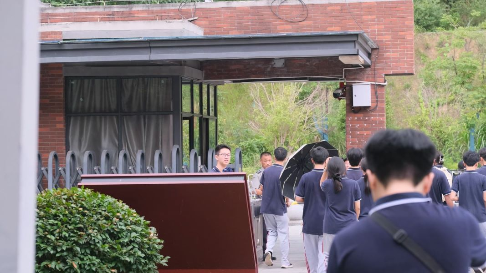
下午再次查询快递发现被放到附近驿站，kingstar找到走读生xyk并告知相关信息。我们要做的就是等待好消息；并且为了将这不可能完成的任务记录下来，我们特地邀请8班电教和10班电教参与拍摄，后续我会将视频版本剪出来（记住这句话）
一语成谶
17:40，我们早早守在校门口，xyk也如期而至。可就当他刚过闸机之时，天公不作美，雨哗啦啦地下起来，雨水淋湿镜头，只留下他模糊的背影。
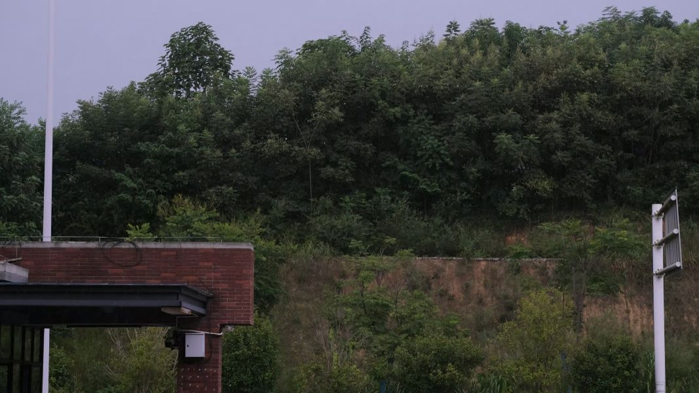
起初我们都认为这是一场小雨，可雨很快越下越大，没几秒就有倾盆之势。我们都没带伞，而xyk也走出校门，我们只能祈祷他在附近的吸烟亭里躲雨，不要被淋的感冒。事实上，我们应该先担心自己，AbCd等人很快跑到附近教学楼躲下，我和kingstar和另一位摄影师则躲到校门口宣传LED屏下，那里刚好够挤下三个人。
雨丝毫没有停下的兆头，虽然在屏幕下避雨，飘进来的雨水也淋湿我的鞋子和小腿，我也隐隐听到雷声；可当我们想迅速离开这里，却发现已经被彻底困住了。
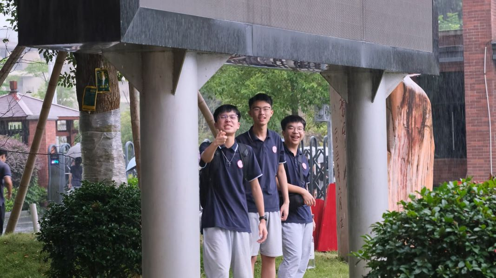
“都怪你！”kingstar冲着教学楼方向对着AbCd大喊：“AbCd你糖爆了，就你想的这鬼代号，非要叫什么咚咚雷音祭，现在真打雷了我们还卡在墙壁里出不去了”……所幸旁边有一些好心的同学路过，撑着伞把我们带回一旁建筑物底下，我们才不至于从头湿到脚。
最漫长的四十分钟
雨停了，我们就在门口等啊等，等啊等，始终看不到xyk的影子。
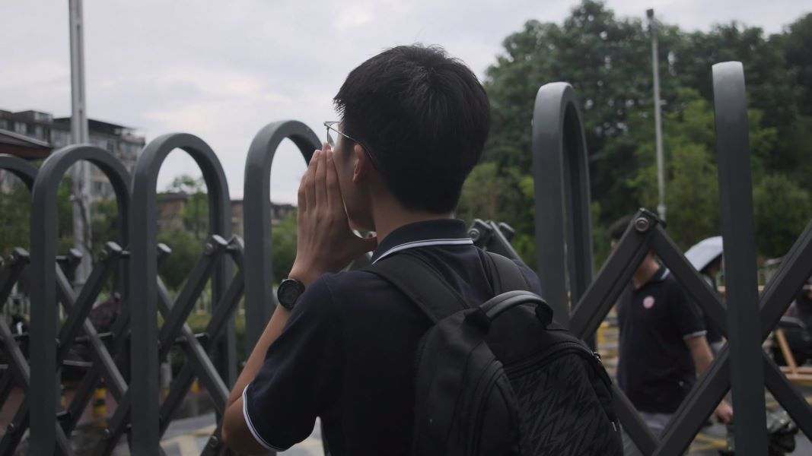
毕竟刚下了这么大的雨，xyk躲雨去了，自己还要吃饭，所以回来晚也情有可原。我们就守在门口，看着走过一个个穿着校服的瘦高背影，却没有一个是xyk。
时间已经到18:00，我们必须要在18:40之前回班晚自习，在此之前我们还要预留时间用来吃完饭，一直这样等下去可不行。kingstar决定主动出击，ping下附近驿站，毕竟我们都不想丢包。
门口保安大哥太性情了，kingstar抱着试一试的心态说是取快递，人家只叮嘱一句别乱买零食就给他放了，所以我们之前搞那么紧张干嘛，自己去不就得了呗。
可当手表的指针转到18:15，kingstar也跟着xyk消失在马路中。19分左右，kingstar空手而归，我们犹如雨后天晴后又晴天霹雳。
“我报了快递单号、手机号和姓名，都说查不到。那些快递查询网站都说放驿站了，怎么会找不到呢？”……诶？
难道说
“难道说——”kingstar突然拖长尾音。
“难道说？”AbCd似乎想到什么。
“难道说！”我们异口同声。
kingstar飞奔至保安室，没过多久，就抱着一个纸箱子出来，打败魔王的道具，就藏在童话里。
“We did it!”我们齐声欢呼，这一喊可不得了，把旁边路过的老师和同学都吓了一跳，他们都用看傻子一样的眼神瞅过来。我们可不在乎，举着快递就跑进机房了。
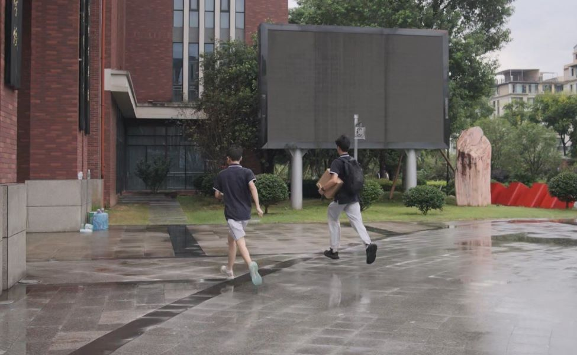
拿到鼓，事情也成功一大半，但我们现在遇到新的挑战，那就是10分钟内速通小卖部买快餐然后回班自习。
ayyc
第二天，我终于有机会仔细瞧瞧那面小鼓，其实乍一看还是挺精致挺可爱的，但实际上那只是一个遥控器被做成鼓的形状，里面就是几个按钮，上面蒙了一层硅胶皮，这手感比街机不知道差了多少，滚奏之类的基本上不用考虑了。不过，一百来块钱的东西你要啥自行车。
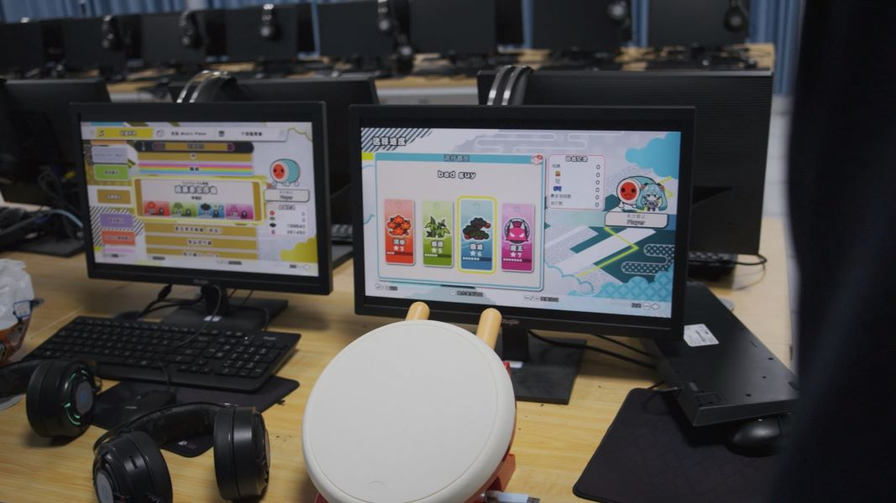
南方中学的音游痴闻着味就来了。株洲这小地方玩街机音游的其实凤毛麟角，像我这种臭打舞萌的可能一层楼能找到三四个，但玩中二节奏或者太鼓的就很难找了。但总之，机房里的都是熟人，我数了数，大抵八九人，一群人在这里还是挺欢乐的。
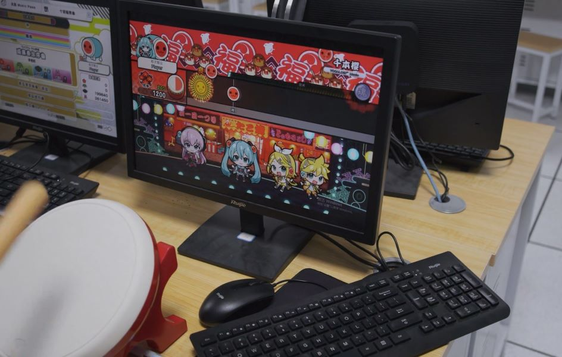
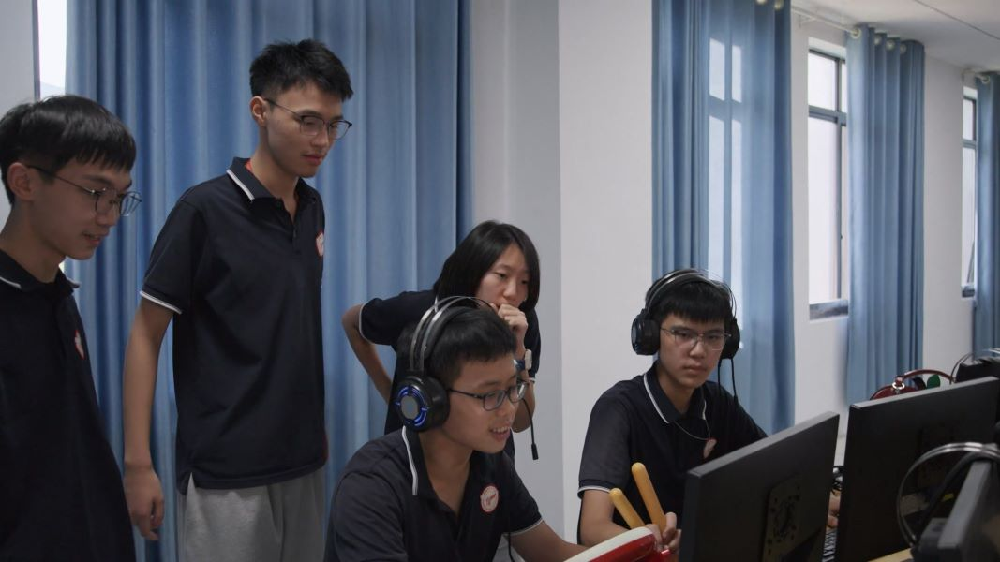
那我们总得搞点仪式对不对？
我将几张卷子撕成条状拼起来，贴在门口；大家先到门外，kingstar手握剪刀，进行剪彩仪式。
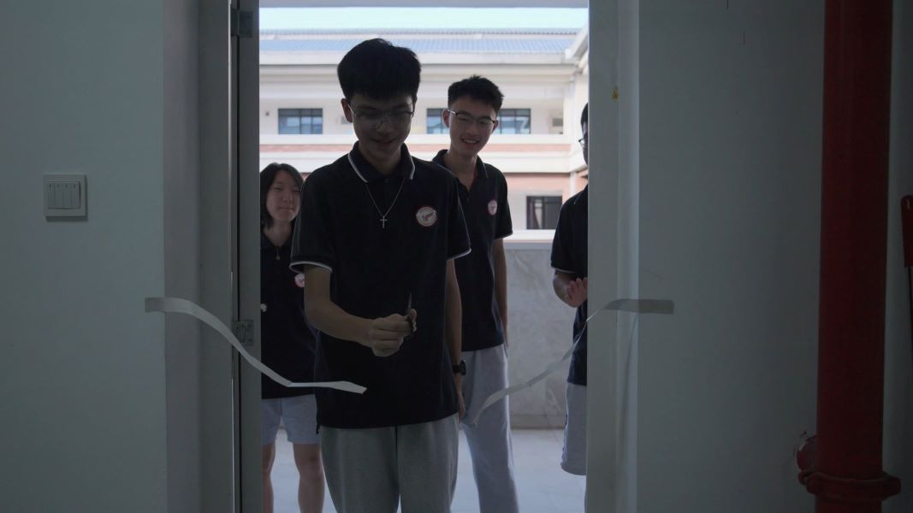
随着清脆的“咔”一声，“彩带”分为两节，我们在门外欢呼、鼓掌。从此，株洲市南方中学成为湖南省第一所拥有太鼓的高中，填补株洲市音游教育的空白，这也意味着我校素质教育迈向了新阶段！这次行动不仅能帮助同学们培养韵律感知能力，还能让同学们在课余时间锻炼身体，缓解学习压力，何乐而不为呢？（当然我们确实挺乐的）
总之，说了这么多，其实关键点还是在“热爱”二字上：如果不是我们对音游、对技术、对Vocaloid的共同热爱，以及同伴间的相互扶持，不可能完成一次次“屡教不改”的冒险——何其有幸，我们在学校里找到了彼此。
我们也组织各种各样的其它活动，比如拿教室门口的安卓电子班牌打舞萌，进行术力口猜歌抢答……篇幅限制，后面慢慢讲。
安全措施
当然，树大招风，来玩的人越多我们就越危险。我们已有前车之鉴，大家都不希望自己和信息老师们遇到麻烦，所以我们制定严格的规则，并且在正式开学后停止大部分游玩活动。
至于那个视频？
咳咳……先让我mkdir……
（4K60帧的视频快给我电脑剪爆了我还得用FFmpeg往死里压压压压压）
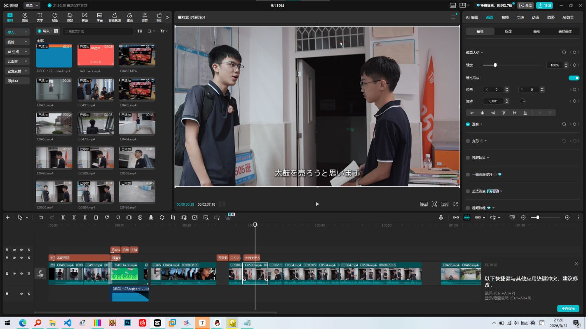
小剧场
（某一天晚自习后，AbCd正在教室内看书，kingstar突然进入）
kingstar：こんにちは、AbCdちゃん。太鼓を売ろうと思います。
AbCd：Stop speaking goddamn Japanese!
kingstar：Fine! I'm considering the possibility of selling the taiko on Available Fish.
AbCd：What's the price?
kingstar：I've searched online for Available Fish. I only found that no one sells taiko on Available Fish, you know?
AbCd：（把书扔到桌子上）DONDERFUL！
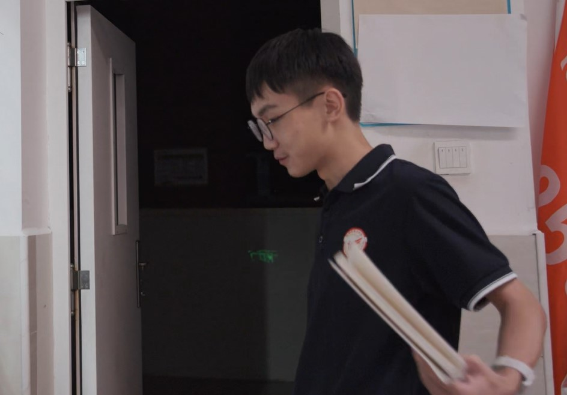